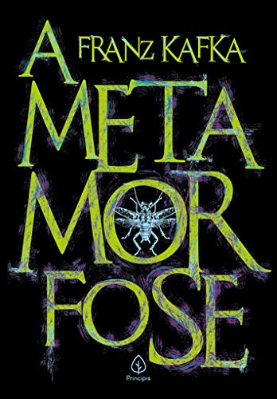

A metamorfose: Escrito por Franz Kafka e publicado em 1915.

A novela A Metamorfose, de Franz Kafka, narra a transformação do caixeiro-viajante Gregor Samsa em um inseto monstruoso. A obra utiliza essa condição insólita para explorar temas como alienação, desumanização, rejeição familiar e solidão decorrentes das pressões sociais.